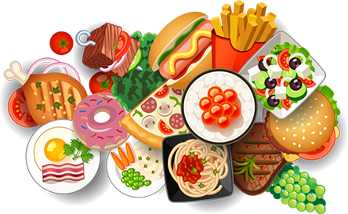

An online survey on food habits oof Indians by Centre for Science and Environment
Food, health and environment are strongly connected. What we eat, how we eat and the way it is produced affects our health and environment. But do we really know?
WHAT IS "GOOD" OR "BAD" FOOD ?
HOW DOES IT AFFECT OUR HEALTH ? WHAT ARE ITS CONNECTIONS WITH THE ENVIRONMENT ?
DO WE PLAY A ROLE IN CHOOSING OUR FOOD ?
OR IS IT CHOSEN FOR US ?